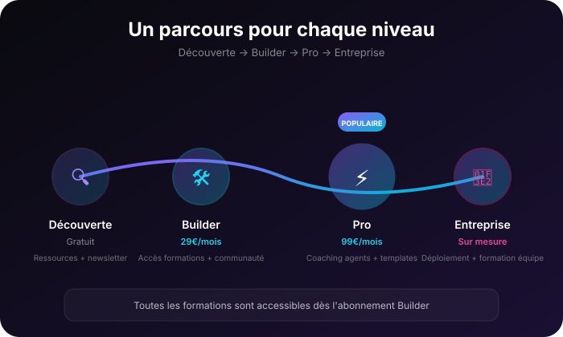

Apprenez à créer et piloter vos agents IA
Formations courtes, concrètes et orientées action pour devenir autonome avec l\u0026apos;IA — sans coder, sans théorie inutile.
Faites pour les indépendants, solopreneurs et petites équipes qui veulent comprendre comment un agent IA fonctionne, savoir poser les bonnes questions à l\u0026apos;IA, construire leurs premiers outils automatisés et rejoindre une communauté de builders.

Des formations pensées pour des indépendants, créateurs, marketers et équipes qui veulent passer de curieux à builder — sans se perdre dans le jargon technique.
Un parcours pour chaque niveau
Chacun avance à son rythme. Vous pouvez commencer gratuit, puis rejoindre Builder ou Pro quand vous êtes prêt à accélérer.
Devenir formateur IA
Créer, animer et vendre des formations autour des agents IA
Freelance, consultant, formateur, enseignant
5 étapes + 6 formations + certification optionnelle
Découverte
Gagner 2h par jour avec 10 prompts prêts à l'emploi
Curieux, débutant
Atelier gratuit 90 min + fiches PDF
Premier agent
Maîtriser les prompts et créer son premier agent sans coder
Builder curieux
Formations self-paced + atelier live 2h
Automatisation contenu
Produire une semaine de contenu en moins d'une heure
Créateur, marketer, solopreneur
Formation self-paced + atelier live 2h
Intégration avancée
Intégrer l'IA dans son workflow avec accompagnement
Pro, équipe, entreprise
Cercle mensuel + bootcamp intensif
Le catalogue complet
Ateliers live, formations en autonomie et accompagnements. Chaque carte indique l'offre requise.
10 prompts pour gagner 2h par jour
L'atelier gratuit qui transforme l'IA en levier quotidien
Repartez avec 10 prompts testés, une fiche par usage, et une méthode pour les adapter à votre métier.
👤 Tout le monde : indépendants, managers, créateurs, employés
🎥 90 min en live + fiches PDF + replay
Maîtrise des prompts
Écrire des prompts qui donnent le bon résultat du premier coup
Structurez vos requêtes, corrigez les erreurs fréquentes, et gagnez du temps sur toutes vos tâches IA.
👤 Débutants et utilisateurs réguliers qui veulent passer au niveau supérieur
🎥 Formation à son rythme + exercices pratiques + template de prompts
Construire son premier agent sans coder
De l'idée à un agent qui fonctionne, sans écrire une ligne de code
Créez un agent opérationnel sur votre propre cas métier, avec un workflow reproductible et des outils accessibles.
👤 Indépendants, managers, marketers, créateurs, consultants
🎥 Formation à son rythme + templates + checklists de validation
Créer son premier agent IA opérationnel
Atelier live : bâtissez votre agent en 2h avec un vrai retour d'expérience
Quittez l'atelier avec un agent fonctionnel, testé et prêt à être utilisé sur votre cas.
👤 Membres Builder curieux de passer à l'action
🎥 2h en live + template + accès au replay
Pipeline de contenu IA
Générez une semaine de contenu pertinent en moins d'une heure
Construisez un système de production de contenu automatisé : calendrier, briefs, posts, visuels, reformatage.
👤 Créateurs, marketers, community managers, solopreneurs
🎥 Formation à son rythme + templates + playbook d'automatisation
Automatiser mon contenu avec l'IA
Atelier live : connectez vos outils et lancez votre chaîne de production de contenu
Partez avec une automation fonctionnelle et un plan d'usage sur 30 jours.
👤 Membres Builder/Pro qui publient régulièrement
🎥 2h en live + playbook + accès au replay
Cercle Builder mensuel
Un rendez-vous mensuel avec les builders IA Factory pour avancer sereinement
Posez vos questions, partagez vos avancées, accédez aux nouveaux templates et aux retours d'expérience du groupe.
👤 Membres Pro et builders actifs
🎥 Session mensuelle de 90 min + canal privé + ressources exclusives
Bootcamp Agent Builder intensif
Deux jours pour maîtriser la création d'agents et repartir autonome
En 2 jours, construisez 3 agents opérationnels, validez votre méthode et intégrez l'IA durablement dans votre activité.
👤 Freelances, dirigeants, équipes opérationnelles
🎥 2 jours en présentiel ou distanciel + coaching post-bootcamp + ressources
Quel parcours est fait pour vous ?
Trois questions pour trouver votre point d'entrée.
Vous voulez créer, animer et vendre des formations autour de l'IA
Vous testez l'IA sans savoir par où commencer
Vous utilisez déjà ChatGPT mais voulez aller plus loin
Vous produisez du contenu et voulez l'automatiser
Vous voulez structurer l'IA dans votre activité ou équipe
Vous cherchez plutôt une solution clé en main ?
Si vous préférez déployer des agents opérationnels sans passer par la formation, découvrez nos solutions entreprise.
Voir les solutions agents pour entreprises →Questions fréquentes
Le parcours Devenir formateur IA est-il inclus dans Builder ou Pro ?
Les formations F1, F2 et F4 sont incluses dans Builder. F3 et l'accompagnement F6 sont réservés à l'offre Pro. La certification F5 est un module Enterprise sur devis.
Faut-il savoir coder pour suivre les formations ?
Non. Toutes les formations sont conçues pour des profils non-techniques. Les outils utilisés sont no-code ou low-code accessibles.
Quelle est la différence entre Builder et Pro ?
Builder donne accès à toutes les formations self-paced et aux templates. Pro ajoute les ateliers live mensuels, le Cercle Builder et des tarifs réduits sur le bootcamp.
Puis-je acheter une formation seule ?
Certains ateliers live sont disponibles à l'unité. Les formations self-paced sont incluses dans les offres Builder ou Pro.
Les replays sont-ils disponibles ?
Oui, tous les ateliers live sont enregistrés et accessibles aux participants.
Comment accéder au contenu après l'achat ?
Vous recevez un accès personnel à l'espace membre IA Factory avec toutes les ressources, templates et replays associés.
Prêt à transformer l'IA en levier concret ?
Commencez par l'atelier gratuit. Passez à Builder ou Pro quand vous êtes prêt à construire vos propres agents.